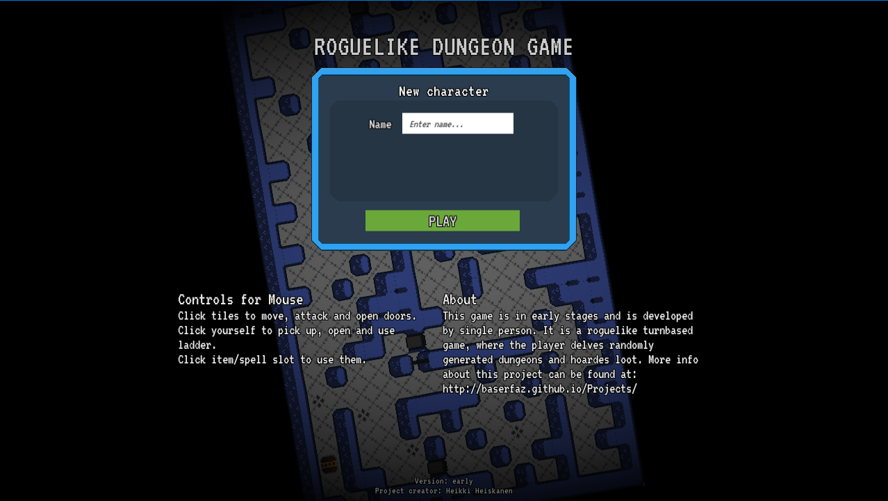

Baserfaz' projects
Adventurer - roguelike RPG - Java game
Project name: Adventurer
Version: extremely early
Introduction
Project is in active development as of 20.7.2017.
Adventurer is looks and feels like an old roguelike game. Therefore it has simplistic graphics and GUI. The goal is to create a roguelike experience but with some persistency. Control schema is copied from the older roguelike games. You move and attack with the same keys. Attacking happens when player "bumps" into an enemy.
The game is created using Java and it's written 100% without any java game libraries. This means that it uses custom 2D game engine, that I build. At the moment the engine is not ready and it's still in development.
Current status
- Main Features
- Procedural dungeon generation: creates rooms and connects them with a continuous maze. Doors are generated to connect these two.
- Procedural maze generation: uses modified backtracking algorithm.
- Tile and room-systems: World consists of rooms, which then consist of tiles.
- Visibility determination: all actors use Bresenham's line algorithm in determinating line of sight.
- Enemy pathfinding: uses A* algorithm.
- Load data from XML-files: item and actor data is read and written in XML-format.
- Enemy AI: enemies follow the player when they are alerted. Also they can attack both in melee and ranged.
Under development
- Engine
- Engine is far from ready and it is developed parallel to Adventurer.
- Adventurer - near future
- Chests & keys
- Re-implement locked doors.
- Fix multiple bugs.
- Main menu & death-screens.
- Obviously more content (items, enemies, bosses etc.)
- Much much more...
Where can I get it?
Code is freely available as open source: here
Playable build can be downloaded here
(Demo can be found in builds folder.)
Screenshots
Screenshot of the lobby (updated 20.7.2017)
Gameplay: dungeon generation - 1
Gameplay: dungeon generation - 2
Roguelike RPG
Project name: Roguelike (name not yet decided)
Version: extremely early
Introduction
Project is not in active development as of 20.7.2017.
This game is a roguelike RPG, where the player dwells in randomly generated dungeons slaying monsters, gathering loot and trying to survive. It's in very early stage, where some 'basic' stuff, such as rough dungeon generation, are implemented.
Game is created by using Unity3D 5.5 and C#. Graphics are done with Pyxel.edit.
Current status
- Main Features
- Random dungeon generation: Generates dungeon layouts automatically. Multiple algorithms, which are pretty rough though.
- Tilesystem: Creates seamless graphics using a tilesystem.
- Line of sight system
- Image parser: Generates dungeons and special rooms using hand drawn images. Supports all mechanics such as doors, walls, enemies, items etc.
- Graphics
- Pixelart graphics: Tiles are 16x16 (might get converted to 32x32) and are created by hand using Pyxel edit software.
- Tech
- Smooth movement & attack: uses vector.lerp.
- Every actor moves on their own turn.
- "Gamejuice": screenshake, lerps etc.
- Audio
- Added rudimentary soundeffects: used bfxr
- Actors
- Basic enemy AI: Enemies follow player and use melee attacks.
- Player has slots for armor, weapon, spell and usable items.
- Enemy types: normal melee, flying enemies (can't trigger traps), static enemies (immovable).
- Bosses: special spell combinations.
- GUI and input
- Keypad and Mouse input: Can play with mouse and keyboard.
- Mouse GUI: Can click/hover on GUI elements.
- Spell range and spell AOE: Show valid tiles.
- Player pathfinding: Uses A* search algorithm.
- Gameplay related features
- Special rooms: With img to dungeon system you can create your own dungeon layouts. For example shops, boss rooms, monster closets etc.
- Loot rarity mechanics/probability calculations: Items come in four different levels (normal, magical, rare, legendary).
- Exp system: Standard leveling system.
- Traps: Floor spikes that hurt actors.
- Effect system: Allows heal/damage/buffs/debuffs over time for all actors in the dungeon.
Under development
- Content
- Bigger pool of items: such as weapons, armor, potions etc.
- Weapon types: different hit area (aoe).
- More status elements: buffs, debuffs etc.
- Spells: Summoning spells, mines, create walls, dig down (i.e. using shovel), ankth (respawn).
- Effects and animations.
- Different enemy types and more diverse enemy behaviour.
- More diverse array of special rooms.
- Sound effects/music.
- Character selection: Player can select from premade characters, who all have different starting gear and conditions.
- Polished sprites.
- Background story.
- Tutorial
- Gameplay changes
- Slow projectiles.
- Persistance: Chance to find a bank room or something similar.
- Randomized effects on each dungeon level: For example chance to do double damage or ignite actors.
- Wells, statues & shrines: randomly generated buffs and boosts.
- Enemy spawners
Where can I get it?
Code is freely available as open source: here
Playable build can be downloaded here
Screenshots
Screenshot #1: current in-game (updated 4.2.2017)
Screenshot #2: old mainmenu (updated 6.1.2017)

Screenshot #3: old in-game (updated 6.1.2017)

Screenshot #4: old in-game (updated 6.1.2017)

Screenshot #5: old in-game (updated 6.1.2017)